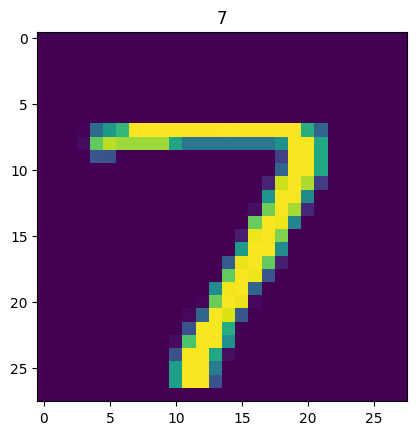
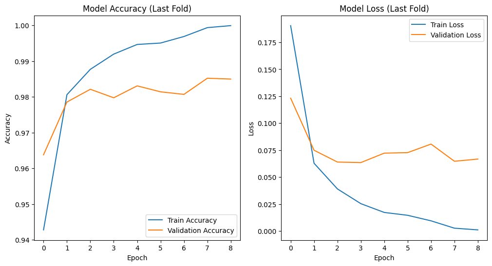

Core Pipeline Dependencies
Libraries for data handling, deep learning, and visualisation.
System Architecture Overview
From raw pixel data to final submission — six‑stage pipeline.
Core CNN Formulation
Key mathematical components of the convolutional neural network.
Input Feature Space
784 pixel values (28×28) + target label.
| Feature | Type | Description |
|---|---|---|
pixel0 … pixel783 | Numerical | Grayscale intensity (0–255) for each of 784 pixels; reshaped to 28×28×1. |
label | Target | Digit 0–9 (multiclass). |
Neural Network Training Pipeline
Core training loop with 10‑fold stratified cross‑validation and tf.data optimisation.
import tensorflow as tf from sklearn.model_selection import StratifiedKFold # Preprocessing pipeline: reshape + rescale preprocessing = tf.keras.Sequential([ tf.keras.Input(shape=(784,)), tf.keras.layers.Reshape((28,28,1)), tf.keras.layers.Rescaling(1./255) ]) def build_model(): inputs = tf.keras.Input(shape=(28,28,1)) x = tf.keras.layers.Conv2D(32, (3,3), activation='relu')(inputs) x = tf.keras.layers.MaxPooling2D((2,2))(x) x = tf.keras.layers.Flatten()(x) x = tf.keras.layers.Dense(128, activation='relu')(x) outputs = tf.keras.layers.Dense(10, activation='linear')(x) return tf.keras.Model(inputs, outputs) kf = StratifiedKFold(10, shuffle=True, random_state=28) fold_accuracies = [] for train_idx, val_idx in kf.split(X_train, y_train): X_tr, X_val = X_train[train_idx], X_train[val_idx] y_tr, y_val = y_train[train_idx], y_train[val_idx] train_ds = tf.data.Dataset.from_tensor_slices((X_tr, y_tr)).shuffle(1000).batch(32).prefetch(tf.data.AUTOTUNE) val_ds = tf.data.Dataset.from_tensor_slices((X_val, y_val)).batch(32).prefetch(tf.data.AUTOTUNE) processed_train = train_ds.map(lambda x,y: (preprocessing(x), y)) processed_val = val_ds.map(lambda x,y: (preprocessing(x), y)) model = build_model() model.compile(optimizer=tf.keras.optimizers.Adam(1e-3), loss=tf.keras.losses.SparseCategoricalCrossentropy(from_logits=True), metrics=['accuracy']) early_stop = tf.keras.callbacks.EarlyStopping(patience=5, restore_best_weights=True) reduce_lr = tf.keras.callbacks.ReduceLROnPlateau(patience=3, factor=0.2, min_lr=1e-5) history = model.fit(processed_train, epochs=50, validation_data=processed_val, callbacks=[early_stop, reduce_lr], verbose=0) val_loss, val_acc = model.evaluate(processed_val, verbose=0) fold_accuracies.append(val_acc) print(f"Average Validation Accuracy: {np.mean(fold_accuracies):.4f}")
Exploratory Visual Diagnostics
Sample digit images and training history plots. Click any image to enlarge.


The images above show a sample digit from the training set and the training/validation curves of the last fold. Place the actual image files (sample.png and training.png) in the same directory as this HTML to display them.
Performance Diagnostics & Engine Insights
10‑fold cross‑validation results (accuracy & loss). Highest accuracy and lowest loss are highlighted.
Diagnostic Breakdown: The model achieves high and stable validation accuracy across all 10 folds, ranging from 97.98% to 98.88%. The lowest loss (0.0451) is achieved in Fold 4, and the highest accuracy (0.9888) in Fold 9 (highlighted in green). Early stopping and learning rate reduction prevent overfitting, and the stratified folds ensure each digit class is proportionally represented.
Project Synthesis & Roadmap
Key takeaways and future improvements.
Empirical Breakdown: The CNN architecture achieves excellent performance on MNIST, with average validation accuracy of 98.59%. The preprocessing pipeline (reshape + rescaling) and stratified K‑fold cross‑validation contribute to robust evaluation. The model generalises well to the test set, producing high‑quality Kaggle submissions.
Future Directions: Apply data augmentation (random rotations, shifts) to improve robustness; experiment with deeper architectures (additional Conv2D layers, batch normalisation); perform hyperparameter tuning via Keras Tuner; explore ensemble methods (averaging predictions from multiple folds).